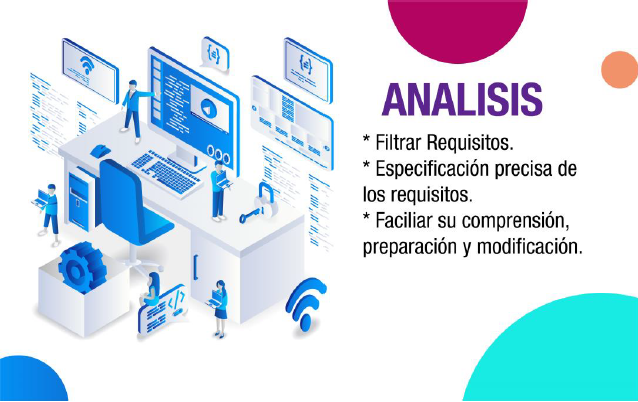

Etapas del desarrollo de software
Requerimientos
Esta etapa tiene como propósito capturar las necesidades del cliente, tratando de tener una comunicación asertiva para tomar un conjunto de requisitos correctos y consistentes. Este proceso puede ser un poco riesgoso y se puede llegar a dilatar, pues muchas veces el usuario no sabe que es lo que quiere, ni que procesos se pueden agilizar haciendo mediación de un software. Para lograr una captura de requisitos que logre llevar al equipo de trabajo al sistema correcto es fundamental entender y diferenciar los Requisitos Funcionales y los Requisitos no Funcionales. Para lograr este paso hay muchas maneras como por ejemplo se puede realizar una entrevista al cliente, una encuesta, un foscu group y hasta una lluvia de ideas, de esta manera se puede lograr los objetivos en esta primera parte, aunque todas son muy utilizadas al momento de hacer la lista de requerimientos, se hace alguna sugenrencia de realizar una entrevista ya que en ella se realizan preguntas al cliente tales como ¿Que necesita que se realice en el software?, ¿Como quiere que el software se comporte? o ¿Como se imagina visualmente el software? y asi mismo en los focus group y en la lluvia de ideas son reuniones en donde las personas ponen a opinion de todos las ideas de como se podria desarrollar el software y de que deberia tener y realizar.
Analisis
Cuando ya se ha realizado un buen listado de los requerimientos que solicta el cliente para la solución del software, entonces procedemos a analizar a cada uno de esos requisitos para obtener los componentes mas principales y poder hacer una buena estructuración del software al cliente. Algunos requisitos son incompletos, ambiguos o contradictorios y en algunos casos alguos inncesarios. El total de lo requisitos en muchos casos se hace plasmar en un documento que tiene diferentes estandares como puede ser el CMM-I. Asimismo, se define un diagrama de Entidad/Relación, en el que se plasman las principales entidades que participarán en el desarrollo del software.
